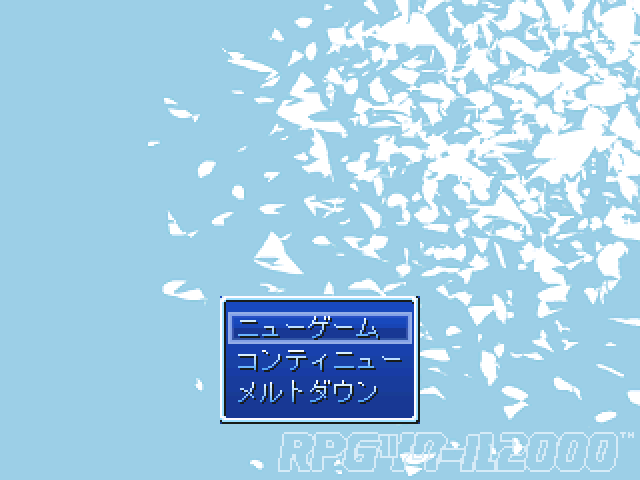

作品紹介
| ≪ Back | トップページ | 作品一覧 | Next ≫ |
| No042. - もしもメルトダウンだったら |

| 使用ツール：2000 |
| 作者：青空のぼる |
| ジャンル：ほぼ見るゲー |
| 動画・配信：不謹慎なので自粛要請 |
|
こんな不謹慎ゲーで大丈夫か？ ★このksgはフィクションです。 ★実在の人物・団体・事件・事故・事象とは一切関係ありません！！１ ＧＷに向けてｔｋｔｋ進めていたものの諸事情あって放棄してたｋｓｇ やっぱり思い直して紅白提出することに ガチで不謹慎なのでPIAI注意のこと |
| 管理人コメント：不謹慎もDon'ｔ恋! |
| ダウンロード(2.4MB) ① ② / 感想掲示板 ツイート |
更新情報・お知らせ
- 2012/01/15
- 遅刻提出
- 2011/11/12
- エントリー